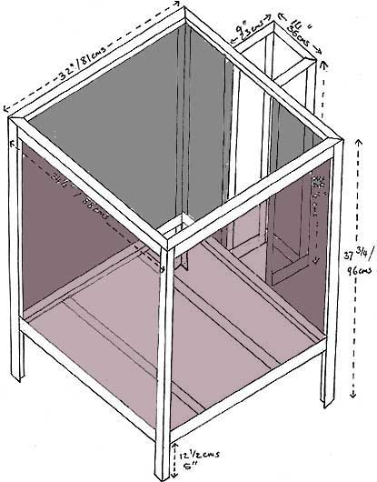

DIY Fast Firing Kiln Design III
Dateline: 12/28/98
 his additional info
on the DIY Fast Firing Kiln Design instructions is a modification which will
greatly improve the qualities of this kiln type. One drawback of this design
has shown itself over years of firing, and that is that the bricks tend to move
slightly and eventually bulge slightly into the interior of the kiln. A space
between the outer and inner layers of brick develops, which is conducive to
heat transfer -- meaning that heat is lost. This gap can also possibly be a
problem when reducing the kiln, as air tends to get sucked in through the gaps
and exact control of the reduction becomes difficult. However, these are problems
that appeared only after several years of heavy use!
his additional info
on the DIY Fast Firing Kiln Design instructions is a modification which will
greatly improve the qualities of this kiln type. One drawback of this design
has shown itself over years of firing, and that is that the bricks tend to move
slightly and eventually bulge slightly into the interior of the kiln. A space
between the outer and inner layers of brick develops, which is conducive to
heat transfer -- meaning that heat is lost. This gap can also possibly be a
problem when reducing the kiln, as air tends to get sucked in through the gaps
and exact control of the reduction becomes difficult. However, these are problems
that appeared only after several years of heavy use!
Another modification I am suggesting is to place both burners at the flue
side of the kiln, instead of at diagonal corners. At art college, the technician
there suggested that diagonal placement would give the most even heat in the
kiln, however I am not so sure about this any more. In theory, the flame is
meant to swirl around the kiln interior in a whirlpool-like fashion, distributing
the heat. However, it has been my experience that the flame from the burner
opposite the flue sucks a lot of the oxygen from the air entering from the flue,
creating an oxidized area, while the rest of the kiln is reducing. How do I
know this? Oxidized and reduced bricks on the floor of the kiln have a very
revealing story to tell! With both burners at the flue end, the flames will
shoot away from the flue, move upwards and arch back down towards the flue.
This should also give a more even heat.
The next modification is to put up calcium-silicate sheeting as outer walls,
holding the outer layer of bricks in place. The kiln will look a lot neater
too. Next, a layer of medium temperature kiln fiber between the outer and inner
layers of brick will make the kiln much more efficient, as heat loss will be
reduced greatly. In theory, hot-face fiber could be used on the interior of
the kiln, however, I do not appreciate kiln designs with exposed fiber walls.
The fiber tends to become very brittle with use and it is near impossible to
stop fiber particles entering the atmosphere during firings and when loading
and unloading the stack. Unless you want to continuously wear a mask when handling
the kiln, you would be exposing yourself to quite dangerous fiber particles.
These particles are on a similar to asbestos -- not very nice. In Australia,
there has been talk about banning the use of fiber blanket altogether. However,
if the fiber is wedged between two layers of brick, and thus not exposed to
the air and/or mechanical friction, there is little danger. To save stacking
space, you might want to reduce the thickness of the cold-face brick by about
a quarter of an inch, to compensate for the fiber thickness. The insulation
qualities of the fiber will more than compensate for the loss in brick thickness.
Actually, you could possibly leave out the cold-face brick altogether, and just
use the calcium-silicate sheeting with the fiber and hot-face brick, laid onto
the broader side. However this type of wall is probably not suitable for long
firings at high temperatures, due to eventual heat loss.
The last modification is to stop the bricks moving by gluing them together
with fireclay, ceramic brick cement or a mixture of the two.
Required materials for these modifications:
- Calcium-Silicate Sheeting (Asbestos substitute) 31 1/4" x 31 3/4" (87 x 80 cms) (front)
- Calcium-Silicate Sheeting (Asbestos substitute) 31 1/4" x 31 3/4" (80 x 80
CMS) (side)
- Calcium-Silicate Sheeting (Asbestos substitute) 31 1/4" x 31 3/4" (80 x
80 CMS) (side)
- Mid-face kiln fiber blanket
- Fireclay or air-drying ceramic cement

modified plan with additional calcium-silicate walls in place
Related Articles:
DIY Fast Firing Kiln Design I
DIY Fast Firing Kiln Design II
More Articles